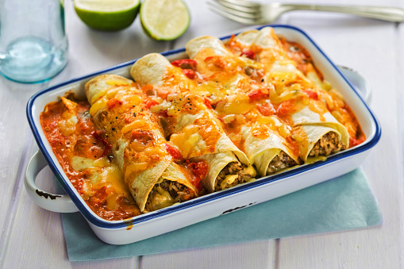

Beef Enchiladas

Mexican beef enchiladas – tortillas packed with beef mince and beans and smothered with cheese – are easy to make and a great crowd-pleaser.
Ingredients
These are the required ingredients:
- 1 tbsp olive oil, plus extra for greasing
- 500g/1lb 2oz beef mince
- 1 red onion, finely chopped
- 3 garlic cloves, crushed or grated
- 1 red chilli, chopped, plus extra to garnish
- 1 celery stick, finely chopped
- 1 beef stock cube
- 2–4 tbsp chipotle chilli paste
- 400g tin red kidney beans in chilli sauce
- 400g tin chopped tomatoes
- 4 tbsp chopped fresh coriander (leaves and stalks), plus extra to garnish
- 8 soft corn tortillas (regular size)
- 3 tbsp sliced red jalapeños in brine, drained
- 200g/7oz Cheddar, grated
- salt and freshly ground black pepper
- soured cream or crème fraîche, to serve (optional)
Steps
Please ensure proper cooking time! Follow these instructions:
- Heat the oil in a wide frying pan. Add the beef and stir-fry over a high heat for 4–5 minutes, breaking up with a wooden spoon so it doesn’t form clumps and browns well.
- Add the onion, garlic, chilli and celery and stir-fry for 3–4 minutes.
- Crumble in the stock cube and add the chilli paste, kidney beans and tomatoes. Bring to the boil, then reduce the heat to medium–low and simmer for 40 minutes, or until thickened, stirring from time to time. Stir in the coriander and season well.
- Preheat the oven to 220C/200C Fan/Gas 7. Lightly oil a shallow ovenproof dish (approximately 20x30cm/8x10in).
- To assemble, lay the tortillas on a clean work surface and divide the beef mixture down the centre of each one, then roll up to seal. Place the stuffed tortillas carefully in the prepared dish, seam-side down, to fit snugly.
- Scatter over the jalapeños and then the cheese. Cover the dish with foil and bake for 10 minutes, then remove the foil and bake for another 10 minutes, or until lightly golden and bubbling.
- Scatter over extra chopped coriander and red chilli, and serve with soured cream or crème fraîche.